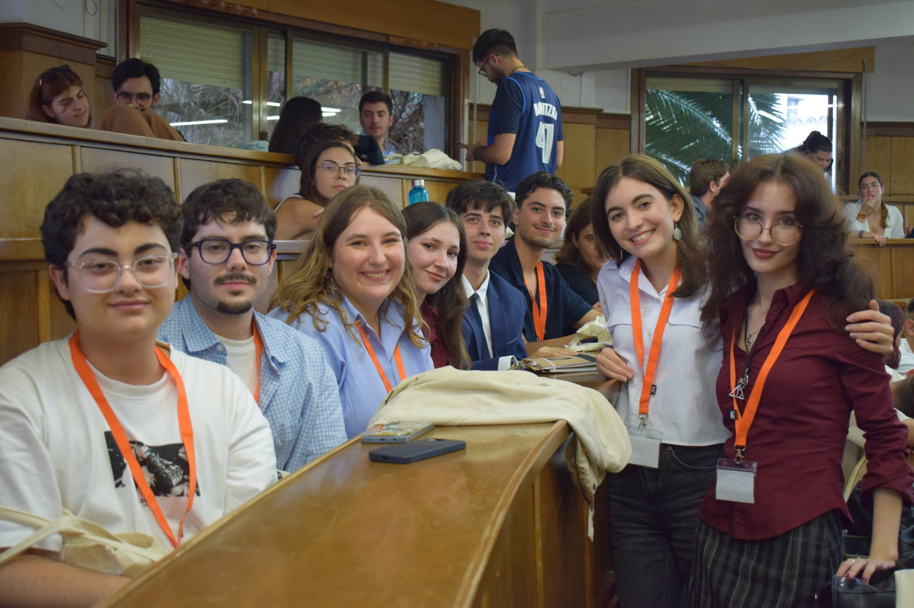

¿Quieres que tus
ideas hagan ruido?
Aprende a hablar en público sin temblar, defiende tus ideas con seguridad y conoce a tus mejores amigos de la carrera.

Compañerismo y ambiente en torneos por toda España
Tardarás solo 1 minuto · Plazas abiertas para este curso
Mira vídeos de torneos, fotos, memes y el día a día
Descubre cómo funciona el club y mira más fotos de eventos
¿Qué ganas entrando al Club?
Mucho más que una actividad universitaria: una experiencia que te transforma.
Hablar en público sin sudar frío
¿Te bloqueas al exponer en clase o en un examen oral? Aquí practicamos en un ambiente de total confianza donde equivocarse es parte del juego. En pocas semanas notarás un cambio brutal en tu seguridad.
Pensamiento crítico y argumentación
Aprende a analizar cualquier tema de actualidad desde diferentes perspectivas, detectar falacias al instante y estructurar argumentos sólidos e irrebatibles para cualquier debate o examen.
Amigos de todas las carreras
Sal de la burbuja de tu clase. En el club hay gente de Derecho, Medicina, Informática, ADE, Letras, Psicología... Fiestas, cenas, cañas después de entrenar y una piña donde siempre encajas.
Un currículum que destaca
Las empresas ya no buscan solo títulos; buscan pensamiento crítico, persuasión, negociación y resolución rápida de problemas. El debate es el entrenamiento de liderazgo más valorado del mercado.
¿Cómo funciona? (Solo 3 Pasos)
Rellenas el formulario
Solo te pide tu nombre, carrera y correo. Cero papeleos.
Vienes a probar
Acudes a tu primera sesión de bienvenida. Puedes venir de oyente o con amigos.
¡Debates y disfrutas!
Tú marcas el ritmo. Asistes cuando te venga bien según tus horarios.
Lo que dicen de nosotros
Experiencias reales de compañeros de la UMU
“En 1º de carrera me daba pánico hablar en público. En el club encontré el apoyo que necesitaba. ¡Hoy expongo en clase con total tranquilidad!”
Ana
Grado en Derecho
“Pensaba que debatir era solo para gente de leyes. Soy de informática y es la mejor decisión que tomé en la uni: amigos y momentos inolvidables.”
José Fernando
Ingeniería Informática
“El ambiente es sano, divertido y nada elitista. Da igual que empieces sin saber nada: la gente te enseña con una paciencia y cariño increíbles.”
Rocío
ADE y Derecho
Dudas frecuentes de estudiantes
¿Tengo que haber debatido antes para unirme?
¡Para nada! El 90% de los miembros entra sin haber debatido en su vida ni haber hablado ante un micrófono. Tenemos talleres formativos específicos diseñados para que empieces desde cero absoluto a tu propio ritmo.
¿Cuesta dinero apuntarse?
No, la inscripción y las sesiones de formación semanales son 100% gratuitas para todos los estudiantes de la Universidad de Murcia.
¿Qué pasa si tengo entregas o exámenes?
Lo primero son tus estudios. La asistencia nunca es obligatoria; tú decides cuándo venir, a qué sesiones sumarte y si te apetece ir a un torneo o quedarte a estudiar esa semana.
No te quedes con las ganas
Da el paso, conoce a gente que vale la pena y vive la universidad de verdad. ¡Te estamos esperando!